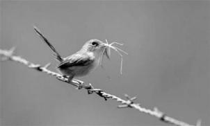

06-2017江苏，B

Red-backed fairy wrens(鹪鹩),which live in northern and eastern Australia, lay three or four eggs at a time.
Before birth, babies can tell the difference between loud sounds and voices. They can even distinguish their mother's voice from that of a female stranger. But When it comes to embryonic learning(胎教), birds could rule the roost. As recently reported in The Auk:Ornithological Advances, some mother birds may teach their young to sing even before they hatch(孵化). New-born chicks can then imitate their mom's call within a few days of entering the world.
This educational method was first observed in 2012 by Sonia Kleindorfer, a biologist at Flinders University in South Australia, and her colleagues. Female Australian superb fairy wrens were found to repeat one sound over and over again while hatching their eggs. When the eggs were hatched,the baby birds made the similar chirp to their mothers—a sound that served as their regular“feed me!”call.
To find out if the special quality was more widespread in birds, the researchers sought the red-backed fairy wren, another species of Australian songbird. First they collected sound data from 67 nests in four sites in Queensland before and after hatching. Then they identified begging calls by analyzing the order and number of notes. A computer analysis blindly compared calls produced by mothers and chicks, ranking them by similarity.
It turns out that baby red-backed fairy wrens also emerge chirping like their moms. And the more frequently mothers had called to their eggs, the more similar were the babies' begging calls. In addition, the team set up a separate experiment that suggested that the baby birds that most closely imitated their mom's voice were rewarded with the most food.
This observation hints that effective embryonic learning could signal neurological(神经系统的)strengths of children to parents. An evolutionary inference can then be drawn.“As a parent, do you invest in quality children, or do you invest in children that are in need?”Kleindorfer asks.“Our results suggest that they might be going for quality.”
全部题目与逐题讲解
- A.be the worst
- B.be the best
- C.be just as bad
- D.be just as good
查看答案与讲解
答案：B
1.B 猜测词义题。根据画线部分后面的描述:一些鸟类在小鸟孵化出来前就开始教它们唱歌了,小鸟孵化出来后几天就能模仿自己母亲的叫声。由此推断出小鸟在这方面做得最棒,所以答案为B项。
- A.Similarities between the calls of moms and chicks.
- B.The observation of fairy wrens across Australia.
- C.The data collected from Queensland's locals.
- D.Controlled experiments on wrens and other birds.
查看答案与讲解
答案：A
2.A 推理判断题。根据第三段中的最后一句话可知,他们把雏鸟的叫声和母亲的叫声进行对比,根据相似度进行排名,由此可知他们的发现是以母亲和雏鸟叫声的相似度为依据的,所以答案为A项。
- A.can receive quality signals
- B.are in need of training
- C.fit the environment better
- D.make the loudest call
查看答案与讲解
答案：C
3.C 推理判断题。根据最后一段可知答案为C项。 高考热词 distinguish vt.区分;辨别;分清 imitate vt.模仿 widespread adj. 分布广的;普遍的;广泛的 identify vt.确认;认出;鉴定 长难句 原句:In addition, the team set up a separate experiment that suggested that the baby birds that most closely imitated their mom's voice were rewarded with the most food. 分析:本句为主从复合句。主句部分是the team set up a separate experiment,第一个that引导定语从句,修饰先行词experiment;第二个that引导宾语从句;第三个that引导定语从句,修饰先行词the baby birds。 译文:此外,这个团队还设置了一个独立的实验。实验表明那些模仿母亲叫声最像的雏鸟会被奖赏最多的食物。
本篇暂无未重复外刊。